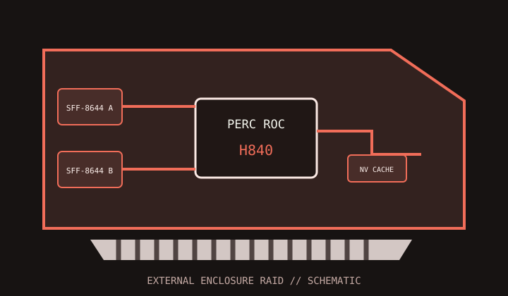

[ INDIVIDUAL COMPONENT // STORAGE / DISK I/O ]
Dell PERC H840
External SAS hardware RAID adapter designed for PowerEdge systems and qualified external disk enclosures.

MODEL SCOPE: Dell PERC H840 adapter. Confirm service tag/system generation, adapter part number, cache-protection configuration and enclosure qualification.
Reference specifications
| Controller | Dell PERC 10-series hardware RAID controller, using a Broadcom RAID-on-Chip platform. |
|---|---|
| Host bus | PCI Express 3.0 x8 adapter interface. |
| Ports | Eight external lanes through two SFF-8644 Mini-SAS HD connectors. |
| Protocols | 12 Gb/s SAS and 6 Gb/s SATA drives/enclosures supported by the H840 and host platform. |
| RAID / HBA mode | Hardware RAID 0, 1, 5, 6, 10, 50 and 60 with Dell-supported non-RAID/JBOD modes where configured. |
| Cache / protection | 8 GB non-volatile cache configuration; cache protection is part of the PERC platform. Verify the actual controller kit and protection status in Dell management before write-back operation. |
| Firmware / OS | Use Dell-validated controller firmware, driver and OpenManage/PERC tools for the exact PowerEdge generation and OS. Generic Broadcom drivers do not replace Dell platform qualification. |
| Drive / backplane caveats | Designed for external SAS enclosures such as qualified Dell MD-series units. Match SAS cable type, enclosure firmware, dual-path topology and host-system support; SATA devices may not provide redundant paths. |
Compatibility and service notes
- Check the server's supported PCIe slot, firmware, lifecycle controller and OS driver matrix before installing this adapter.
- Use Dell-qualified SFF-8644 cables and supported storage enclosures; do not assume any JBOD enclosure exposes identical management or multipath features.
- Capture virtual-disk configuration and cache health before controller replacement, update or enclosure recabling.
Sources & further reading
- Dell — PowerEdge RAID Controller H840 manuals and documentsOfficial H840 installation, maintenance and troubleshooting resources.
- Dell — PERC 10 User's GuideManufacturer reference for the PERC 10 family, configuration, cache and controller management.
- Dell — PERC H840 adapter with 8 GB NV cacheManufacturer listing for an H840 adapter configuration; verify service part number.